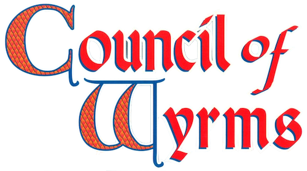

основа
1107Council of Wyrms (1994) — коробка11383Campaign Option: Council of Wyrms Setting (1999) — твёрдый переплёт
дракономиконы
9297«Draconomicon» под AD&D2 (1990) — первый тираж: на обложке дракон смотрит влево, на обороте штрих-код слева9297«Draconomicon» под AD&D2 (1999) — второй тираж: на обложке дракон смотрит вправо, на обороте штрих-код тоже справа17668«Draconomicon: The Book of Dragons» под D&D3 (2003)21788«Draconomicon: Chromatic Dragons» под D&D4 (2008)24210«Draconomicon: Metallic Dragons» под D&D4 (2009)- «The Draconomicon» под D&D5 (2021)
WTCC92740000«Fizban's Treasury of Dragons» под D&D5 (2021)- «Tyranny of Dragons» под D&D5 (2023)